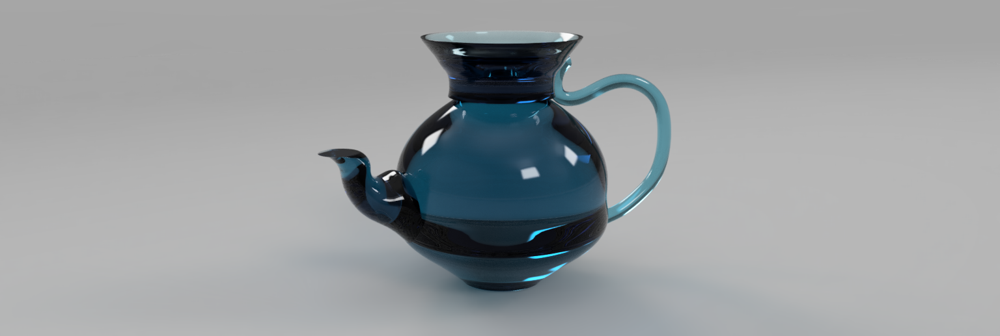
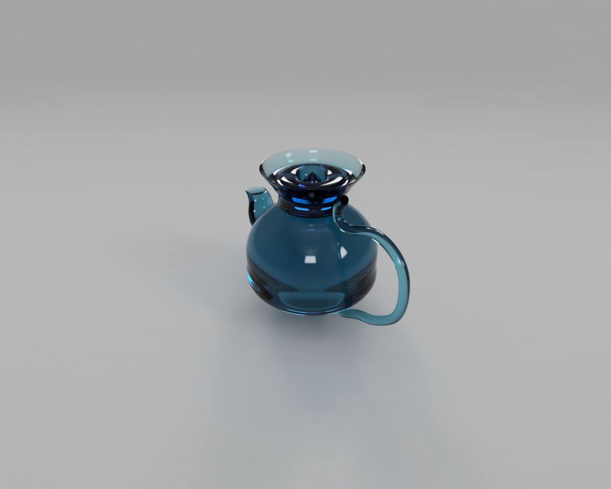

3D Teapot/Vase Design
This project started off as a hand drawn sketch. I wanted to create a mix of a vase and a teapot. From there, I sketched out the image in Fusion360 and created a full 3D design. I added the glass material in order to give it a more fancier theme as compared to the usual looks that we see.

